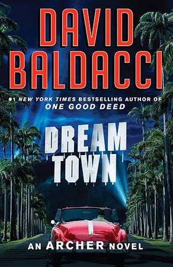

On a slow summer day, I was driving to do some grocery shopping and also jsut getting out for some fresh air. Meanwhile, I was listening to an interview on the NPR where the guest was talking about real life stoires of people failing in their erands including the author herself. Along the way, she mentioned that she has written a book on the failures and what we usually could potentially learn from them. The conversation felt very engaging and genuine, and I was curious to read the book to see more of the author's perspective on the topic as well as the failure stories.
I really liked the book's recounts of failures that happened to many differnt people and also the consquences. I feel like the book gets a reptitive every now and then; Personally, I would have liked more if it was more concise and with minimal repetition. Overall, it is a good read to remind ourselves to be more aware of our inclination to make mistakes and errors that could be avoided by simply be less presumptuous, neglectful, and overconfident. Also, it refreshes the fact that setting up a harsh judgement session for ourselves after a failure would just make the situation worse.

Believe it or not, this is the first crime novel that I read in English. I was fooling around in the Walmart in Kansas and as usual while skimming through the book section, I deciced to try something new and picked this one. It took me a while to finish this book with my highly sporadic reading sessions.
The storyline takes place in mid 19th around Los Angles, there are many characters being introduced too quickly early on and one after another which demands a very keen intelect to keep a track of them. Towards the end of the book the content and characters are more focused and it's easier to follow up the story. Well, it was a good test of enduarance though and I kind of saw it as a chanllenge to take on! I think plot is fine, there a few interesting twists, but I believe the author could go deeper on the characters by removing the often `overly-described` outfits and scenary. Perhaps, It would not a near future when I would try another crime novel by this author!